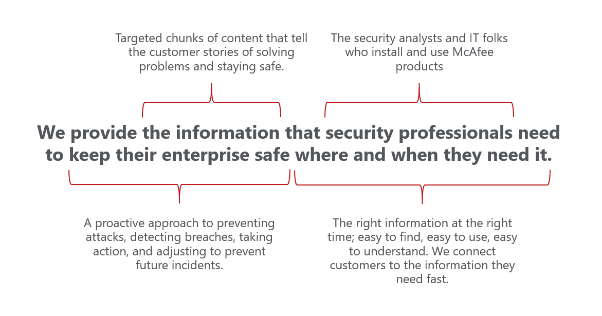

The Challenge
As a newly minted Content Strategy team, we needed a shared vision of our purpose, and the purpose of the Information Development department at McAfee. What was it, exactly, that our department did? What principles could we, as content developers, use to guide our decisions? We needed a core content strategy statement!
The Response
It took us three hour-long remote sessions to craft our core content strategy mission statement.
In the first session, I introduced the concept of a core content strategy statement to the team, talked about the value of such a thing, and outlined how I wanted to go about it. We did some brainstorming, culling through McAfee mission statements, corporate values, departmental goals, and our own thoughts and feelings on the subject. We closed the session and took a week to let everything stew and simmmer.
In the second session, we quickly came to an agreement on our strategy statement (if you stay out of inspiration’s way, it’ll find you suprirsingly quickly). We spent some time haggling over a couple of words, but the statement remained relatively unchanged. It wasn’t my perfect content strategy statement, but it was our statement–one that the entire team could agree was good enough to guide our decisions. In this case, alignment was more important than perfection. I explained that we would be annotating our statement in our next meeting, and ended the session early.
In our last session, we talked about the four components of our core content strategy, and fleshed out what we meant for each one.
The Benefits
Armed with a core content strategy statement, we set up meetings with information developers across McAfee, using it as a tool to explain why we needed a content strategy, what our ambitions were for content at McAfee, and what we, as a Content Strategy team were working towards. We invited everyone to think like a content strategist, and encouraged them to leverage the core content strategy statement as they thought about their own content changes.
Here’s the core content strategy statement we arrived at:
